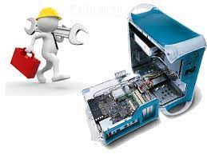

CyberTech informática oferece serviços de assistência técnica, presencial e remota para pessoa física e jurídica

Oferecemos atendimento em sua empresa ou residência , nossos técnicos são altamente capacitados e estão prontos para achar a solução que você precisa . Atendemos toda região de Porto Alegre e trabalhamos com hora marcada. Ligue agora e agende seu horário.
Manutenção preventiva e corretiva prioriza a prevenção dos equipamentos ( Computadores , servidores , notebooks ) além de manter sua rede seja ela wireless ou cabeada sempre funcionado , evitando paradas desnecessárias.
Nossos clientes passam por um processo de atendimento personalizado , para assim garantir o melhor funcionamento de sua infraestrutura . Etapa 1: Diagnostico de infraestrutura Etapa 2: Implantação projeto de TI Etapa 3: Prevenção de segurança Etapa 4: Suporte e manutenção.